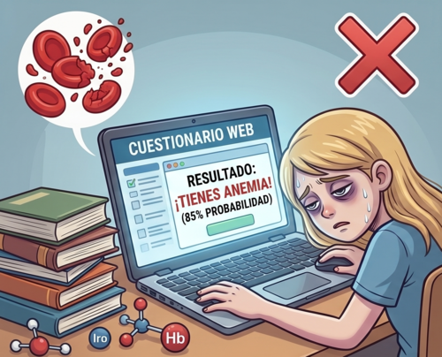

Consulta
Se revisan sintomas, dieta, antecedentes y posibles perdidas de sangre.
Este test no diagnostica anemia. Solo estima un nivel de riesgo segun respuestas sobre sintomas y factores personales. El diagnostico real se confirma con evaluacion medica y analisis de sangre.
Diagnostico real
Un profesional de salud revisa sintomas, antecedentes, alimentacion y signos fisicos. Si lo considera necesario, solicita un hemograma para medir hemoglobina y otros valores de la sangre.

Se revisan sintomas, dieta, antecedentes y posibles perdidas de sangre.
La prueba mide hemoglobina y ayuda a confirmar si existe anemia.
Otros examenes pueden identificar si falta hierro, vitaminas u otra condicion.
En bebes y ninos pequenos la evaluacion debe hacerla personal de salud, porque los valores normales cambian por edad y el crecimiento. Esta pagina los incluye como informacion, pero el test interactivo esta pensado para adolescentes y adultos.
Test orientativo
Elige tu perfil y responde unas preguntas breves. El resultado no reemplaza una consulta medica, pero puede ayudarte a reconocer senales de alerta.
Test interactivo
Las preguntas cambian segun el tipo de persona porque los factores de riesgo no son iguales para todos.
Completa el test para ver tu resultado.
Tu resultado aparecera aqui al responder todas las preguntas.
Si el resultado indica riesgo moderado o alto, o si los sintomas son intensos, lo adecuado es acudir a una evaluacion medica. No te automediques con hierro.